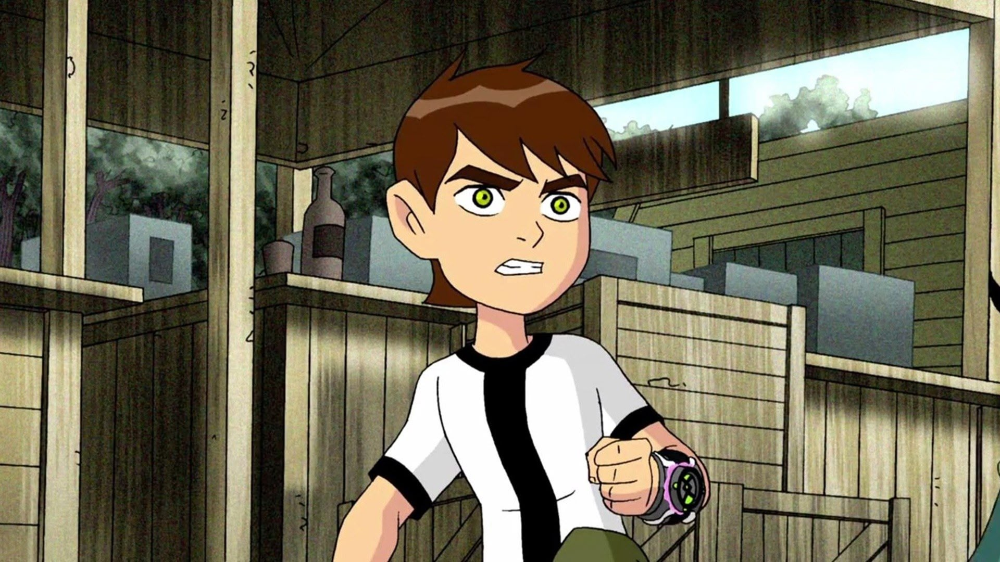
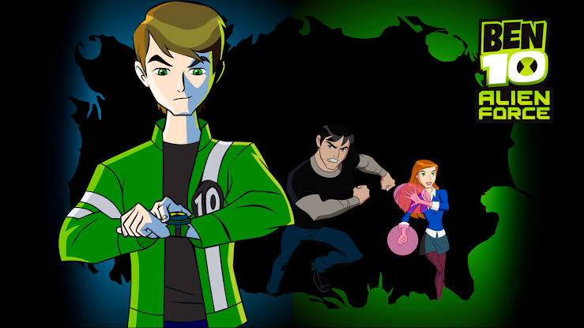
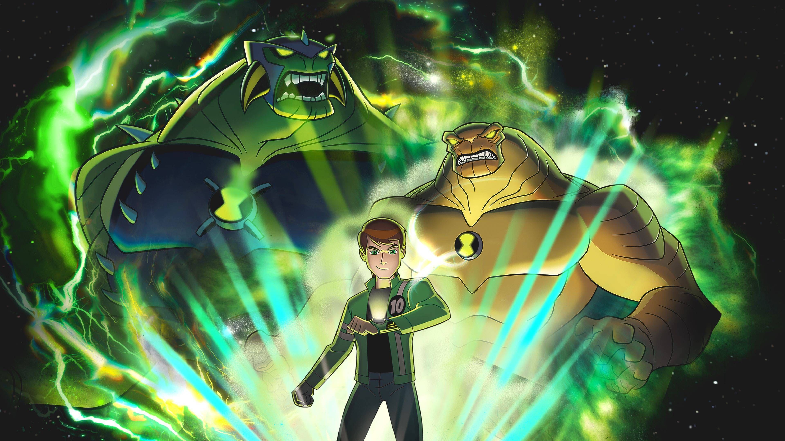
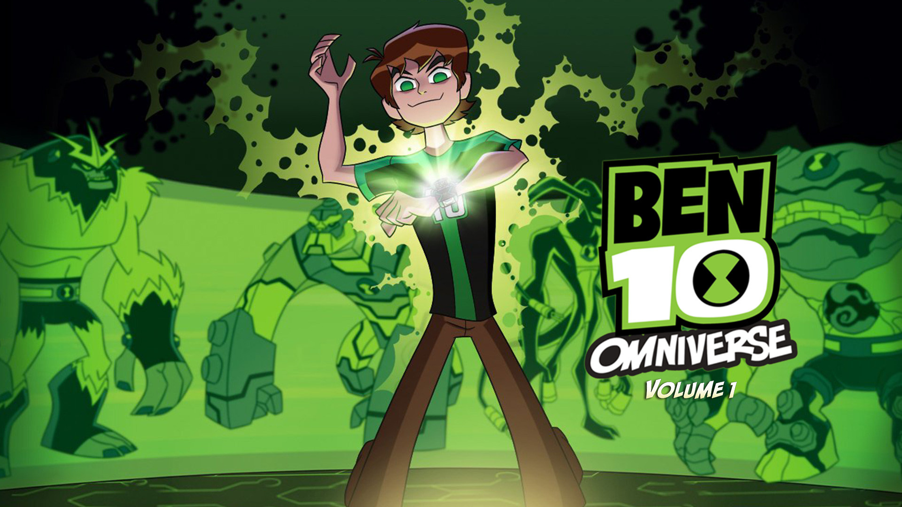
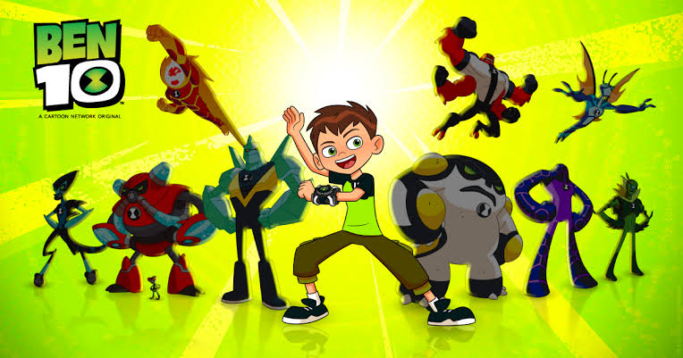

Explore every Ben 10 adventure on ToonStream.

The original Ben 10 series.

Ben returns as a teenager.

Discover the power of the Ultimatrix.

Ben's next big adventure.
The animated reboot of Ben 10.
Animated and live-action movies.

Special episodes and crossover events.